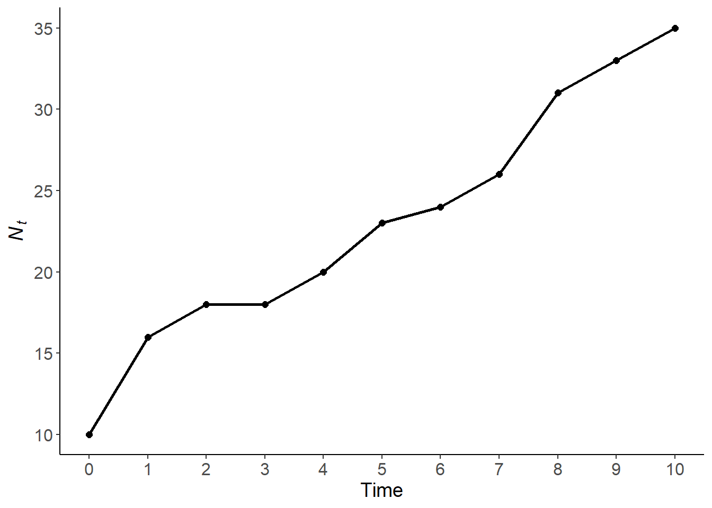

for(i in 1:10){ #Sequence
print(i) #body
}
## [1] 1
## [1] 2
## [1] 3
## [1] 4
## [1] 5
## [1] 6
## [1] 7
## [1] 8
## [1] 9
## [1] 10Workshop 4: Density independent models
This workshop cover density independent population growth models. These are the simplest form of population models. There are two types of models that can be used discrete and continuous models.
R script: github
Discrete Population models
Discrete models assume that there are distinct generations. This is very common for populations that live in seasonal habitats - their reproduction is timed to the season, and they breed altogether in one bout. These populations experience geometric growth. Here the population at a given time point (\(N_t\)) is defined by the equation
\[ N_t = N_0\lambda^t\] where \(N_0\) is the starting population size, \(\lambda\) is the finite growth rate of the population, and \(t\) is the time step.
Continuous population growth
Not all populations have discrete reproduction, and therefore are continuously increasing. These populations experience exponential growth, and the population size at a given time (\(N_t\)) can be found with the equation
\[ N_t = N_0e^{rt} \] where \(N_0\) is the population size at time = 0, \(r\) is the instantaneous per capita growth rate, and \(t\) is time.
Properties of density independent growth
Comparing the methods for geometric (discrete) and exponential (continuous) growth models we find that \[ \lambda = e^r\] or \[ ln\lambda = r \] these relationships can be used to distinguish between \(\lambda\) and \(r\).
Based on the properties there are a few general rules
- no change in population: \(r = 0\); \(\lambda = 1\)
- population increase: \(r > 0\); \(\lambda > 1\)
- population decline: \(r < 0\); \(\lambda < 1\)
for loops
Because the equations for density independent growth are based on the population size the time step before. for loops are very useful when using these models in R.
For loops repeat a process for a certain number of iterations. These can be useful iterate over a dataset or when using information in a time series. The for loop works over the number sequence indicated and does the code within the loop (i.e. the body of the loop; inside of {}) for each number in the sequence. The iteration is typically indicated with i, but is just an object that is replaced at the beginning of each loop and can be anything.
Here is a simple example where we print the iterator i for each number in the sequence.
The iterator can be assigned to any object, and the sequence can be any vector of numbers.
for(turtle in 5:10){
print(turtle)
}
## [1] 5
## [1] 6
## [1] 7
## [1] 8
## [1] 9
## [1] 10A common use of the iterator is to use it to index values to combine with other coding to repeatedly do a task.
for(flower in 1:nrow(iris)){
cat('The species for this iteration is ', #Adding text per row based on name species
as.character(iris$Species[flower]), '\n') #note of importance of "\n
}
## The species for this iteration is setosa
## The species for this iteration is setosa
## The species for this iteration is setosa
## The species for this iteration is setosa
## The species for this iteration is setosa
## The species for this iteration is setosa
## The species for this iteration is setosa
## The species for this iteration is setosa
## The species for this iteration is setosa
## The species for this iteration is setosa
## The species for this iteration is setosa
## The species for this iteration is setosa
## The species for this iteration is setosa
## The species for this iteration is setosa
## The species for this iteration is setosa
## The species for this iteration is setosa
## The species for this iteration is setosa
## The species for this iteration is setosa
## The species for this iteration is setosa
## The species for this iteration is setosa
## The species for this iteration is setosa
## The species for this iteration is setosa
## The species for this iteration is setosa
## The species for this iteration is setosa
## The species for this iteration is setosa
## The species for this iteration is setosa
## The species for this iteration is setosa
## The species for this iteration is setosa
## The species for this iteration is setosa
## The species for this iteration is setosa
## The species for this iteration is setosa
## The species for this iteration is setosa
## The species for this iteration is setosa
## The species for this iteration is setosa
## The species for this iteration is setosa
## The species for this iteration is setosa
## The species for this iteration is setosa
## The species for this iteration is setosa
## The species for this iteration is setosa
## The species for this iteration is setosa
## The species for this iteration is setosa
## The species for this iteration is setosa
## The species for this iteration is setosa
## The species for this iteration is setosa
## The species for this iteration is setosa
## The species for this iteration is setosa
## The species for this iteration is setosa
## The species for this iteration is setosa
## The species for this iteration is setosa
## The species for this iteration is setosa
## The species for this iteration is versicolor
## The species for this iteration is versicolor
## The species for this iteration is versicolor
## The species for this iteration is versicolor
## The species for this iteration is versicolor
## The species for this iteration is versicolor
## The species for this iteration is versicolor
## The species for this iteration is versicolor
## The species for this iteration is versicolor
## The species for this iteration is versicolor
## The species for this iteration is versicolor
## The species for this iteration is versicolor
## The species for this iteration is versicolor
## The species for this iteration is versicolor
## The species for this iteration is versicolor
## The species for this iteration is versicolor
## The species for this iteration is versicolor
## The species for this iteration is versicolor
## The species for this iteration is versicolor
## The species for this iteration is versicolor
## The species for this iteration is versicolor
## The species for this iteration is versicolor
## The species for this iteration is versicolor
## The species for this iteration is versicolor
## The species for this iteration is versicolor
## The species for this iteration is versicolor
## The species for this iteration is versicolor
## The species for this iteration is versicolor
## The species for this iteration is versicolor
## The species for this iteration is versicolor
## The species for this iteration is versicolor
## The species for this iteration is versicolor
## The species for this iteration is versicolor
## The species for this iteration is versicolor
## The species for this iteration is versicolor
## The species for this iteration is versicolor
## The species for this iteration is versicolor
## The species for this iteration is versicolor
## The species for this iteration is versicolor
## The species for this iteration is versicolor
## The species for this iteration is versicolor
## The species for this iteration is versicolor
## The species for this iteration is versicolor
## The species for this iteration is versicolor
## The species for this iteration is versicolor
## The species for this iteration is versicolor
## The species for this iteration is versicolor
## The species for this iteration is versicolor
## The species for this iteration is versicolor
## The species for this iteration is versicolor
## The species for this iteration is virginica
## The species for this iteration is virginica
## The species for this iteration is virginica
## The species for this iteration is virginica
## The species for this iteration is virginica
## The species for this iteration is virginica
## The species for this iteration is virginica
## The species for this iteration is virginica
## The species for this iteration is virginica
## The species for this iteration is virginica
## The species for this iteration is virginica
## The species for this iteration is virginica
## The species for this iteration is virginica
## The species for this iteration is virginica
## The species for this iteration is virginica
## The species for this iteration is virginica
## The species for this iteration is virginica
## The species for this iteration is virginica
## The species for this iteration is virginica
## The species for this iteration is virginica
## The species for this iteration is virginica
## The species for this iteration is virginica
## The species for this iteration is virginica
## The species for this iteration is virginica
## The species for this iteration is virginica
## The species for this iteration is virginica
## The species for this iteration is virginica
## The species for this iteration is virginica
## The species for this iteration is virginica
## The species for this iteration is virginica
## The species for this iteration is virginica
## The species for this iteration is virginica
## The species for this iteration is virginica
## The species for this iteration is virginica
## The species for this iteration is virginica
## The species for this iteration is virginica
## The species for this iteration is virginica
## The species for this iteration is virginica
## The species for this iteration is virginica
## The species for this iteration is virginica
## The species for this iteration is virginica
## The species for this iteration is virginica
## The species for this iteration is virginica
## The species for this iteration is virginica
## The species for this iteration is virginica
## The species for this iteration is virginica
## The species for this iteration is virginica
## The species for this iteration is virginica
## The species for this iteration is virginica
## The species for this iteration is virginicaAnother common use of for loops is to iterate over values of a vector or dataframe. This can be done by desgniating the sequence from a starting value (e.g. 1) to the length() of a vector or nrow() of a dataframe.
d = seq(1,15, 2) #8 elements
d
## [1] 1 3 5 7 9 11 13 15
for(i in 1:length(d)){
b = d[i] + 1 #for each i add 1
cat('d =',d[i], 'b = d + 1 =', b, '\n' )#then add string
}
## d = 1 b = d + 1 = 2
## d = 3 b = d + 1 = 4
## d = 5 b = d + 1 = 6
## d = 7 b = d + 1 = 8
## d = 9 b = d + 1 = 10
## d = 11 b = d + 1 = 12
## d = 13 b = d + 1 = 14
## d = 15 b = d + 1 = 16The iterator can be combined with math (e.g. subtraction or addition) to call mulitple values in a specific order. This example uses the the ith term and the i-1th terms to complete a task.
Note This will be very useful in population models that depend upon previous time steps.
b = 1:10
for (i in 2:10){ #Call a section of vector to start sequence
z = b[i] - b[i-1]
cat('z =', z, 'b[i] =', b[i], 'b[i-1] =', b[i-1], '\n')
}
## z = 1 b[i] = 2 b[i-1] = 1
## z = 1 b[i] = 3 b[i-1] = 2
## z = 1 b[i] = 4 b[i-1] = 3
## z = 1 b[i] = 5 b[i-1] = 4
## z = 1 b[i] = 6 b[i-1] = 5
## z = 1 b[i] = 7 b[i-1] = 6
## z = 1 b[i] = 8 b[i-1] = 7
## z = 1 b[i] = 9 b[i-1] = 8
## z = 1 b[i] = 10 b[i-1] = 9Simulate a population
Now we can use for loops to simulate a simple population.
We first create indicate our starting population size (\(N_0\)) and create a dataframe with all of our time steps and a column for the population size at each time step (\(N_t\)).
library(tidyverse)
N_0 = 10
years = 10
pop = tibble(time = 0:years, Nt = NA) #Output vector size 10
pop$Nt[pop$time == 0] = N_0
pop
## # A tibble: 11 × 2
## time Nt
## <int> <dbl>
## 1 0 10
## 2 1 NA
## 3 2 NA
## 4 3 NA
## 5 4 NA
## 6 5 NA
## 7 6 NA
## 8 7 NA
## 9 8 NA
## 10 9 NA
## 11 10 NAWe can use a for loop to go through each time point, randomly generate a number of individuals born from a Poisson distribution and add it to the populations size from the time before.
*Note this simulation will change with each run because growth rate is randomly generated each time step.
for (t in 1:years){ #sequence
growth = rpois(1, lambda = 3) #extracting random value from Poisson Dist
pop$Nt[pop$time == t] = growth + pop$Nt[pop$time == (t-1)]
}
pop
## # A tibble: 11 × 2
## time Nt
## <int> <dbl>
## 1 0 10
## 2 1 16
## 3 2 18
## 4 3 18
## 5 4 20
## 6 5 23
## 7 6 24
## 8 7 26
## 9 8 31
## 10 9 33
## 11 10 35ggplot(pop, aes(time, Nt))+
geom_point(size = 2)+
geom_line(linewidth = 1)+
labs(x = 'Time', y = expression(italic(N[t])))+
scale_x_continuous(breaks = seq(0,10,1))+
theme_classic()+
theme(axis.text = element_text(size = 12),
axis.title = element_text(size = 14))
Average growth rate
In real populations \(N_t/N_{t-1}\) are not constant. We can calculate the yearly \(\lambda\) also referred to as the annual growth rate (\(R\)) which is \[R = N_{t+1}/N_t\] This can be calculated within a for loop
# create column to store data
pop$R = NA
for (i in 1:length(pop$time)){
pop$R[i] = pop$Nt[i+1]/pop$Nt[i]
}
pop
## # A tibble: 11 × 3
## time Nt R
## <int> <dbl> <dbl>
## 1 0 10 1.6
## 2 1 16 1.12
## 3 2 18 1
## 4 3 18 1.11
## 5 4 20 1.15
## 6 5 23 1.04
## 7 6 24 1.08
## 8 7 26 1.19
## 9 8 31 1.06
## 10 9 33 1.06
## 11 10 35 NAWhat \(R\) is representing if \(Nt\) is population size at Time \(t\)?
\(\lambda > 1\) for all years so the population is always growing
This may be the case depending on the random draws from Poisson Distribution, which may include lower sequential values from starting point
This can also be done in dpylr
Note the correction. Need to use the lead() function to \(N_{t+1}\). The lag() function would be to represent \(N_{t-1}\).
pop = pop |>
mutate(R.2 = lead(Nt) / Nt)
pop
## # A tibble: 11 × 4
## time Nt R R.2
## <int> <dbl> <dbl> <dbl>
## 1 0 10 1.6 1.6
## 2 1 16 1.12 1.12
## 3 2 18 1 1
## 4 3 18 1.11 1.11
## 5 4 20 1.15 1.15
## 6 5 23 1.04 1.04
## 7 6 24 1.08 1.08
## 8 7 26 1.19 1.19
## 9 8 31 1.06 1.06
## 10 9 33 1.06 1.06
## 11 10 35 NA NARandom sampling
Random numbers
In the above example we generated random growth from a Poisson distribution, but R can handle many other types. Since they are randomly generated, these numbers will be different each time. You can also use the set.seed() to repeat the answer.
rnorm(5, mean = 0, sd = 1)
## [1] 1.1104285 -0.1024504 -0.3213595 0.9741068 2.0356239
runif(5, min = 0, max = 5)
## [1] 0.2300484 3.8160084 3.9887727 3.0719079 0.6847662
rpois(10, lambda = 10)
## [1] 14 13 7 11 8 12 9 9 8 10
rpois(10, lambda = 1:10)
## [1] 1 1 7 2 3 6 7 6 7 13
rbinom(5, size = 2, prob = 0.5)
## [1] 0 1 1 1 1
rbinom(5, size = 2, prob = 0.2)
## [1] 1 0 0 1 0
# get same answer
rnorm(5, mean = 0, sd = 1)
## [1] -0.05243607 -1.27053266 1.15072977 -0.28730179 0.39866448
set.seed(14)
rnorm(5, mean = 0, sd = 1)
## [1] -0.66184983 1.71895416 2.12166699 1.49715368 -0.03614058
set.seed(14)
rnorm(5, mean = 0, sd = 1)
## [1] -0.66184983 1.71895416 2.12166699 1.49715368 -0.03614058Packages like truncnorm can be useful for specialized cases of random number generation. In this case truncnorm generates numbers from a random normal distribution with within a minimum and maximum value. Note that there currently is not a
library(truncnorm)
# truncnorm to truncate normal distribution
rnorm(20, mean = 1, sd = 2)
## [1] 3.4638904 0.8702385 3.1379875 0.2460694 3.0863662 0.2343562
## [7] 1.5988432 2.3484795 0.4143674 1.9761067 2.7656036 4.7254980
## [13] 4.2234506 1.2709591 3.1761720 -1.5336295 0.6028334 1.2777316
## [19] 0.4413280 2.4178388
truncnorm::rtruncnorm(20, mean = 1, sd = 2, a=-Inf, b=Inf)
## [1] -0.5332209 3.8867259 2.6897586 0.2012592 -1.8555352 -1.8439849
## [7] 0.3435434 1.5691401 2.4386718 1.8648320 0.2961505 1.5954429
## [13] 0.4771353 3.6173795 1.0317405 0.1376513 1.7648931 1.0822502
## [19] 0.8815520 -1.5928480
truncnorm::rtruncnorm(20, mean = 1, sd = 2, a=0, b=2)
## [1] 0.03259992 0.37152808 1.45994701 1.44008734 0.99530685 0.06211853
## [7] 1.93274772 0.32162900 0.14693736 0.98817199 1.40848303 0.41730609
## [13] 0.75023858 1.73363648 0.88728165 0.83727607 0.49600072 0.96570812
## [19] 0.24541725 0.43970458Random selection
Another type of random sampling is drawing from a sample from a vector and this can be done with sample() in base R with replacement or without replacement and based on certain probabilities.
# base R
b = 1:10
sample(b, size =2, replace = F)
## [1] 5 8
c = 1:5
sample(c, size = 6, replace = T)
## [1] 1 1 4 4 4 1
# from list
sample(c('good', 'bad'), size = 8, replace = T)
## [1] "bad" "bad" "bad" "bad" "good" "bad" "bad" "bad"
# change probability
sample(c('good', 'bad'), size = 8, replace = T, prob = c(0.2, 0.8))
## [1] "good" "bad" "bad" "bad" "bad" "bad" "bad" "bad"
# sample matrices from list
m1 = matrix(c(6,5,4,3,2,1), ncol = 2)
m2 = matrix(c(1,2,3,4,5,6), ncol = 2)
m3 = matrix(c(1,2,3,4,5,6), ncol = 2, byrow = T)
m = list(m1, m2, m3)
sample(m, size = 4, replace = T)
## [[1]]
## [,1] [,2]
## [1,] 1 4
## [2,] 2 5
## [3,] 3 6
##
## [[2]]
## [,1] [,2]
## [1,] 6 3
## [2,] 5 2
## [3,] 4 1
##
## [[3]]
## [,1] [,2]
## [1,] 1 2
## [2,] 3 4
## [3,] 5 6
##
## [[4]]
## [,1] [,2]
## [1,] 6 3
## [2,] 5 2
## [3,] 4 1
sample(m, size = 4, replace = T, prob = c(0.8, 0.1, 0.1))
## [[1]]
## [,1] [,2]
## [1,] 6 3
## [2,] 5 2
## [3,] 4 1
##
## [[2]]
## [,1] [,2]
## [1,] 6 3
## [2,] 5 2
## [3,] 4 1
##
## [[3]]
## [,1] [,2]
## [1,] 1 4
## [2,] 2 5
## [3,] 3 6
##
## [[4]]
## [,1] [,2]
## [1,] 6 3
## [2,] 5 2
## [3,] 4 1dplyr has a useful function sample_n() that is specialized to work with dataframes and tibbles
#library(tidyverse)
df = tibble(cond = c('good', 'bad', 'ok'), prob = c(0.5, 0.3, 0.2))
dplyr::sample_n(df, size = 2, replace = F)
## # A tibble: 2 × 2
## cond prob
## <chr> <dbl>
## 1 ok 0.2
## 2 bad 0.3
dplyr::sample_n(df, size = 3, replace = T)
## # A tibble: 3 × 2
## cond prob
## <chr> <dbl>
## 1 good 0.5
## 2 bad 0.3
## 3 bad 0.3
dplyr::sample_n(df, size = 10, replace = T, weight = prob)
## # A tibble: 10 × 2
## cond prob
## <chr> <dbl>
## 1 good 0.5
## 2 good 0.5
## 3 bad 0.3
## 4 ok 0.2
## 5 good 0.5
## 6 bad 0.3
## 7 bad 0.3
## 8 bad 0.3
## 9 good 0.5
## 10 ok 0.2Density independent continuous population models
\(r\) is the instantaneous per capita growth rate. It’s value determines how population size will change over time.
What are we doing here?
r = c(-0.03, -0.02, 0, 0.02, 0.03)
N_0 = 10
years = 100 #hundred time steps
pop = tibble(time = rep(0:years, times = length(r)),
Nt = NA, growth = rep(r, each = years+1))
pop
## # A tibble: 505 × 3
## time Nt growth
## <int> <lgl> <dbl>
## 1 0 NA -0.03
## 2 1 NA -0.03
## 3 2 NA -0.03
## 4 3 NA -0.03
## 5 4 NA -0.03
## 6 5 NA -0.03
## 7 6 NA -0.03
## 8 7 NA -0.03
## 9 8 NA -0.03
## 10 9 NA -0.03
## # ℹ 495 more rows
for(i in seq_along(pop$time)){
pop$Nt[i] = N_0 * exp(pop$growth[i] * pop$time[i])
}
pop
## # A tibble: 505 × 3
## time Nt growth
## <int> <dbl> <dbl>
## 1 0 10 -0.03
## 2 1 9.70 -0.03
## 3 2 9.42 -0.03
## 4 3 9.14 -0.03
## 5 4 8.87 -0.03
## 6 5 8.61 -0.03
## 7 6 8.35 -0.03
## 8 7 8.11 -0.03
## 9 8 7.87 -0.03
## 10 9 7.63 -0.03
## # ℹ 495 more rowsAlso can be done in dplyr
#Using dplyr
pop = pop |>
mutate(Nt.2 = N_0 * exp(growth*time),
ln.Nt = log(Nt.2))
pop
## # A tibble: 505 × 5
## time Nt growth Nt.2 ln.Nt
## <int> <dbl> <dbl> <dbl> <dbl>
## 1 0 10 -0.03 10 2.30
## 2 1 9.70 -0.03 9.70 2.27
## 3 2 9.42 -0.03 9.42 2.24
## 4 3 9.14 -0.03 9.14 2.21
## 5 4 8.87 -0.03 8.87 2.18
## 6 5 8.61 -0.03 8.61 2.15
## 7 6 8.35 -0.03 8.35 2.12
## 8 7 8.11 -0.03 8.11 2.09
## 9 8 7.87 -0.03 7.87 2.06
## 10 9 7.63 -0.03 7.63 2.03
## # ℹ 495 more rowsWhat ln.Nt is representing?
Let’s see with ggplot
###Let's see it using ggplot
library(ggpubr)
a = ggplot(pop, aes(x = time, y = Nt, color = as.factor(growth))) +
geom_line(linewidth = 1) +
labs(x = 'Time', y = expression(italic(N[t])),
color = expression(italic(r)),
title = 'Exponential')+
theme_bw()
b = ggplot(pop, aes(x = time, y = ln.Nt, color = as.factor(growth))) +
geom_line(linewidth = 1) +
labs(x = 'Time', y = expression('ln('~italic(N[t])~')'),
color = expression(italic(r)),
title = 'Semilogarithmic')+
theme_bw()
# plot combined
ggarrange(a,b,
nrow = 1,
common.legend = T)Slope of line in b is \(r\) (intrisic rate of increase)
Exercises
Download primer and open primer package. Upload the sparrows dataset from package and plot counts as function of years.
Calculate the annual rate of increase (\(\lambda\)) for each time step and plot \(\lambda\) as function of years as a scatterplot
Hint: Look at theforloop/dplyr examples aboveChallenge: Simulate a population with varying \(\lambda\) at each time step.